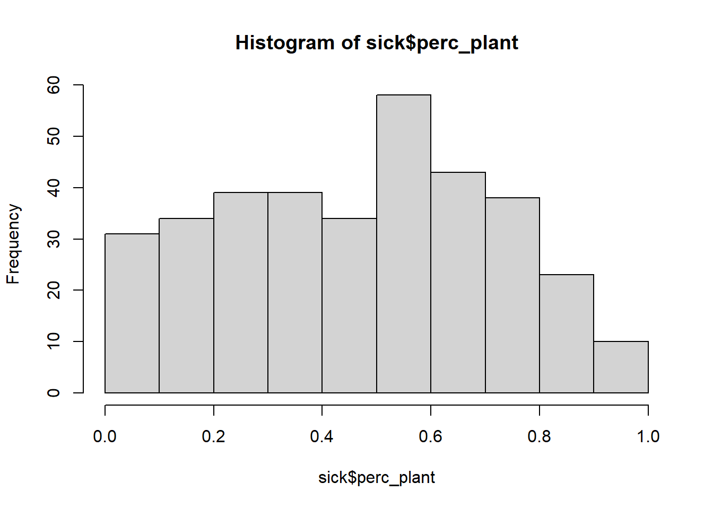
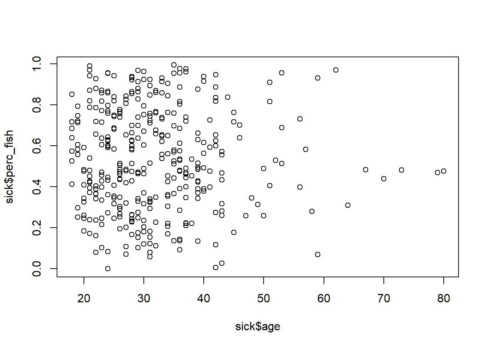
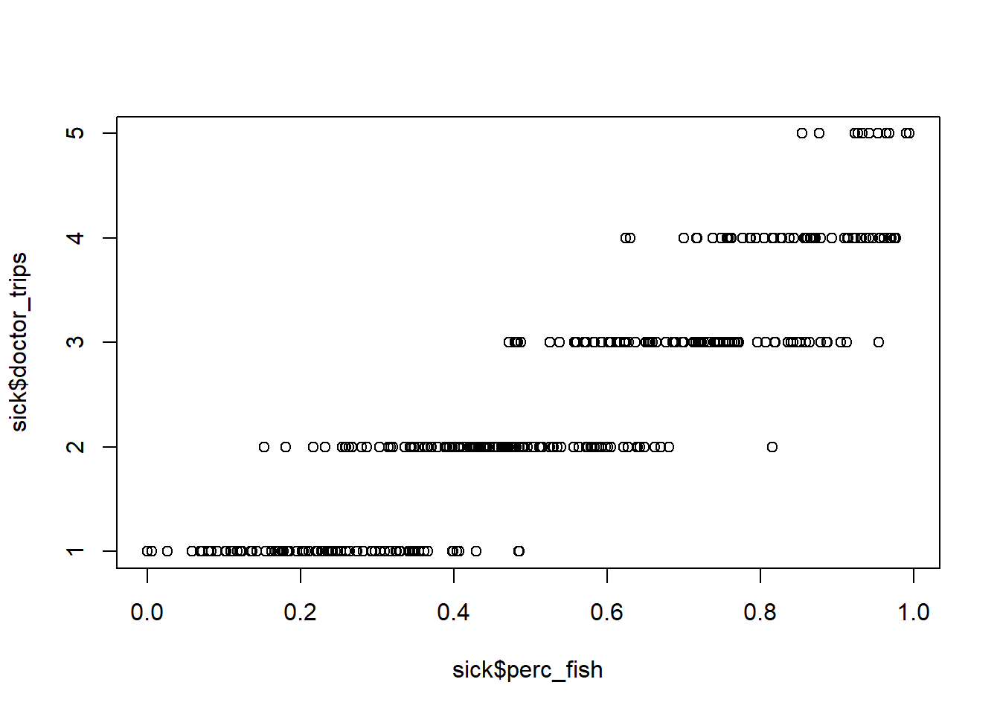

library(tidyverse)2.1: Good Food Gone Bad
Descriptive Statistics and Data Visualization
Learning Outcomes
- Students will be able to apply basic data science knowledge to find the cause of a real-world scenario: food poisoning!
- Students will be able to generate two types of plots using base R syntax to visualize a single continuous variable (histograms and distributions) and two continuous variables (scatter plots).
- Students will be able to use visual-thinking skills to create visualizations that allow them to explore patterns in data, draw inferences, and create solutions.
Introduction to the problem
We have a wave of people getting sick across the team. People are coming in complaining of stomach sickness. Doctors have ruled out a communicable viral infection like norovirus, so it seems likely to be a food contamination issue.
The two main sources of food that are grown on site and distributed to team members are plants grown in hydroponic greenhouses (mostly Swiss chard, cucumbers and radishes) and fish (tilapia, a tolerant warm-water species, and rainbow trout, a cold-water species). The combination of aquaculture and hydroponics is called aquaponics.

Team members’ diets vary in composition; people are allowed to choose how much of different food sources they eat.
Fortunately, we have some data we can use to investigate! We have data on the following:
- which team members are sick and how many times they’ve gone to the doctor
- some information about each team member, such as:
- sex, age, height, occupation
- how much fish and/or plant material they incorporate into their diets
The Data
First we’re going to pull in the data and give it a quick inspection/exploration before we start.
As usual, we start by calling the tidyverse.
To bring our data into R, we use a function called read_csv(). CSV (comma-separated values) are efficient ways to save 2-dimensional (“spreadsheet”) data.
sick <- read_csv("data/sick_data.csv")Rows: 349 Columns: 10
── Column specification ────────────────────────────────────────────────────────
Delimiter: ","
chr (4): last, first, sex, specialties
dbl (6): age, height_cm, weight_kg, perc_fish, perc_plant, doctor_trips
ℹ Use `spec()` to retrieve the full column specification for this data.
ℹ Specify the column types or set `show_col_types = FALSE` to quiet this message.head(sick)# A tibble: 6 × 10
last first sex age height_cm weight_kg specialties perc_fish perc_plant
<chr> <chr> <chr> <dbl> <dbl> <dbl> <chr> <dbl> <dbl>
1 Gonzal… Ange… M 35 169. 51.4 Hydrology 0.994 0.00620
2 Navrat… John M 19 112. 96.3 Genetics 0.297 0.703
3 Duff Josh… M 26 133. 52.1 Horticultu… 0.514 0.486
4 Dottson Juli… M 36 140. 52.6 Climatology 0.686 0.314
5 al-Sul… Mune… M 26 194. 52.2 Geology 0.292 0.708
6 Galleg… Rich… M 29 153. 98.1 Climatology 0.329 0.671
# ℹ 1 more variable: doctor_trips <dbl>Let’s talk about the data we have:
- How many observations (rows) do we have?
- What type of information does a single row represent?
- How many variables (columns) do we have?
Which variables are we particularly interested in? Are they continuous or categorical? Does it matter?
Instructor Note: Each row represents one team member. The character columns are last, first, sex, and specialties; the numeric columns are age, height_cm, weight_kg, perc_fish, perc_plant, and doctor_trips.
The key variables for this lesson are perc_fish, perc_plant, and doctor_trips. Point out that perc_fish and perc_plant are proportions (0 to 1), not percentages (0 to 100). Row 1 shows perc_fish = 0.994 and perc_plant = 0.006, which sum to 1. Students may call them “percent” informally, which is fine, but make sure they understand the scale when interpreting plots.
doctor_trips is a count (discrete) but is treated as continuous for the purposes of scatter plots here. This is worth a brief mention if students ask.
Group Discussion
How might we figure out what is causing the problem? Try to focus on potential solutions that involve the data we already have.
Spend 5 minutes brainstorming in your groups how you might figure out whether plants or fish are the culprits. Be ready to report out.
Write a research question with a dependent variable and an independent variable.
Instructor Note: Students should land on the idea of comparing doctor visits against fish consumption vs. plant consumption. Guide them toward thinking about the dependent variable (doctor visits / sickness) and independent variables (percent fish, percent plant). The goal of this discussion is to motivate the scatter plot they will build later in the lesson.
Descriptive Statistics and Data Visualization
In order to begin addressing the question of what might be causing illness in our crew (and lots of other questions!), we want to start with descriptive statistics and data visualization.
In this course, we will be working with two types of statistics: descriptive and inferential.
- Descriptive statistics, also called summary statistics, are ways of presenting, organizing, and summarizing data.
- Inferential statistics help us draw reasonable conclusions about a population based on the data we observed in a sample.
In Module 2, we will be focusing exclusively on descriptive statistics and data visualization techniques.
As a quick overview, descriptive statistics often include 3 elements:
- distribution of the data
- measures of central tendency: mean, median, and mode
- measures of variation: range and standard deviation
For a nice overview of descriptive statistics, check out this website. It goes a bit further than we cover here, but it is a great place to review!
Let’s Practice
Now that we have a more formalized understanding of measures of central tendency and measures of variation, let’s put them into use to learn a little bit more about our data. In small groups, calculate the mean (mean()) and standard deviation (sd()) for the percent fish in our sick crew’s diets.
# Write your code hereAnswer:
sick %>%
summarize(mean_fish = mean(perc_fish, na.rm = TRUE),
sd_fish = sd(perc_fish, na.rm = TRUE))# A tibble: 1 × 2
mean_fish sd_fish
<dbl> <dbl>
1 0.534 0.250Instructor Note: This is a good moment to ask students what na.rm = TRUE does and why it might be necessary. They saw this in module 1.3.
Data Visualization in R
Combining data visualization with descriptive statistics is a great way to understand our data!
There are two main ways to make data visualizations in R: through base R, which is the syntax we learned in our first week of coding, and through ggplot2, which is a package in the tidyverse.
For the majority of this course, we will be plotting with ggplot2, which is a fun and powerful tool. However, to plot even a simple plot, ggplot2 takes some explanation. We will cover ggplot2 in the next lesson. For now, let’s make some quick plots in base R.
Histograms
We’ve calculated some descriptive statistics about the percents of fish and plants in our sick crew members’ diets, but it didn’t tell us too much. Let’s try some data visualization to see if that gives us any additional information.
# histogram in base R
hist(sick$perc_plant)
Group Discussion
Discuss this histogram with your group members. Some questions to consider:
- What is a histogram?
- What does a histogram tell us?
- What does each axis mean? (x-axis is horizontal, y-axis is vertical)
- What, if any, conclusions can we draw from this histogram in regards to the percent plants in diets and sickness?
- How can we improve this visualization?
Take about 5 minutes. Be ready to report out.
Instructor Note: Key takeaways: a histogram shows the distribution of a single continuous variable, in this case, what proportion of the crew eats various amounts of plants. The histogram alone can’t tell us whether plants are causing illness, because it doesn’t show any relationship with sickness. Use this to motivate the need for a two-variable plot (scatter plot), which comes next.
Group Brainstorm
We’ve covered one type of visualization that shows one variable at a time… but what we’re really interested in is figuring out if fish or plants are the culprit in food poisoning. Spend about 5 minutes in your groups sketching out a visualization that might give us insight into this.
Instructor Note: Students should land on something like a scatter plot or bar chart comparing food consumption against doctor visits. Accept any reasonable idea and use it to transition into the scatter plot section.
Scatter plots
Scatter plots allow us to visualize the relationship between two continuous (or numeric) variables. For example, we can use a scatter plot to see if there is a relationship between how old a crew member is and how much fish is in their diet.
# scatter plot in base R
plot(x = sick$age, y = sick$perc_fish)
This isn’t super informative, because there isn’t really a relationship between a person’s age and the amount of fish they consume. At least not in this sample.
Building and Interpreting
Create a scatter plot to determine whether there is a correlation between the percentage of fish eaten and the number of trips to the doctor in the past 6 months.
# Write your code hereAnswer:
plot(x = sick$perc_fish, y = sick$doctor_trips)
How do we interpret this plot? What does the pattern tell us about the relationship between fish consumption and illness?
Instructor Note: The plot shows a clear positive relationship. Team members with a low proportion of fish in their diet have low doctor visits. As fish proportion increases, doctor visits jump.
Key discussion questions:
- What would this plot look like if there were no relationship? (Points scattered randomly with no directional trend)
- What would it look like if plants were the culprit instead? (The pattern would flip, high perc_plant values would pair with high doctor trips, but since perc_fish and perc_plant sum to 1, this plot would actually show the opposite pattern)
- Does this plot prove fish is contaminated? (No, it shows correlation, not causation. We haven’t done any statistical testing yet. This is a good preview of what Module 3 will cover)
Close by connecting back to the research question students wrote at the start of the lesson. Did their data support or contradict what they predicted?